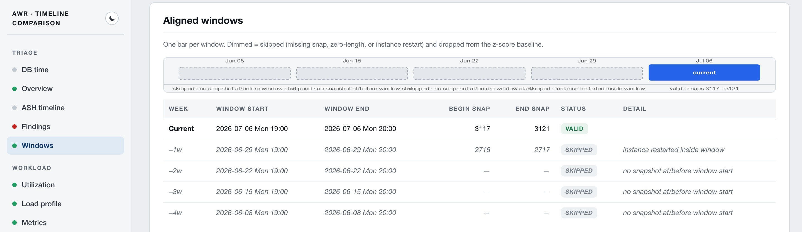
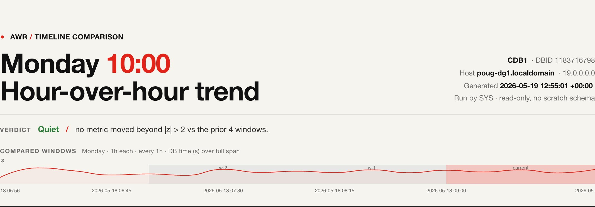
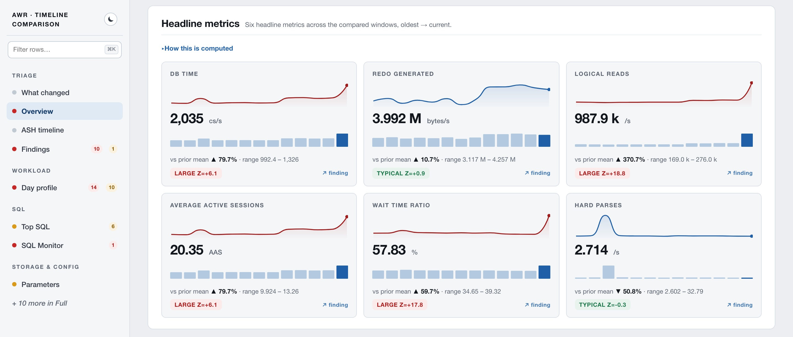
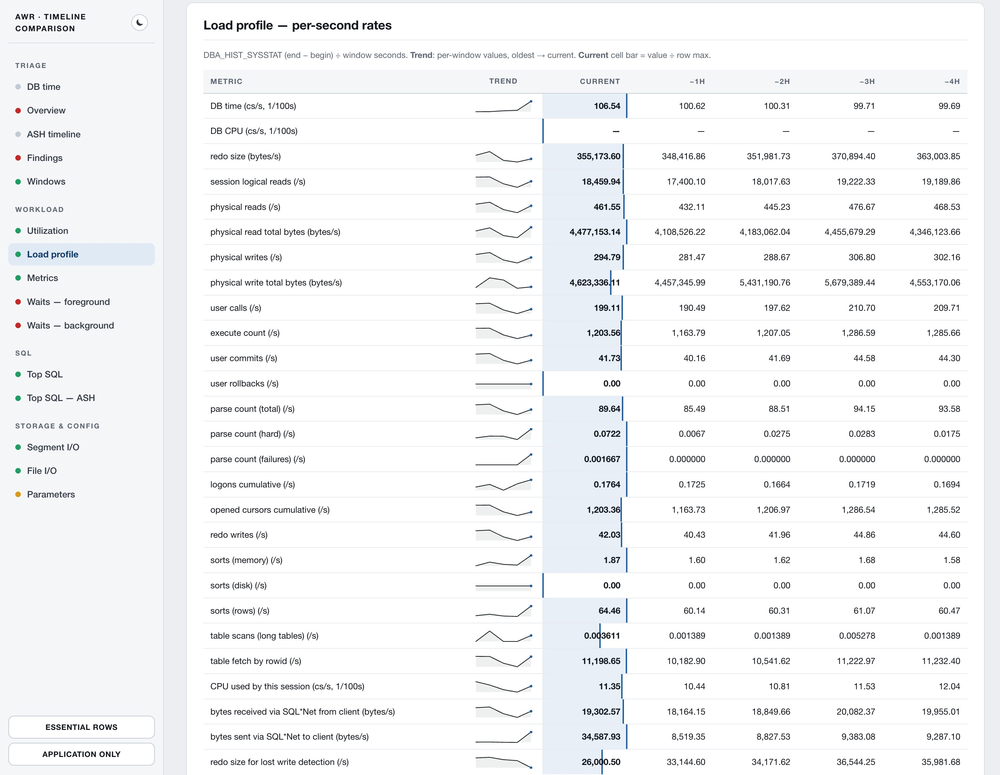
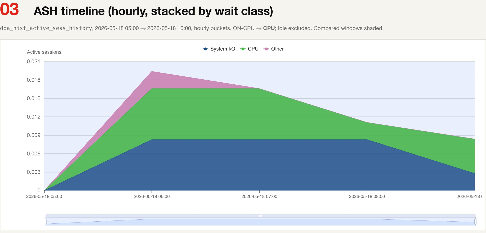
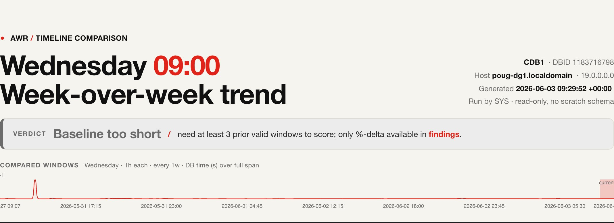

What it is
A pure-SQL toolkit for Oracle 19c that compares AWR snapshots of the same hour across weeks — by default this Monday 09:00–10:00 against the four prior Mondays at 09:00–10:00 — flags drastic changes via z-score, and renders everything as a single self-contained HTML file. It runs from SQL*Plus with nothing to deploy: no scratch schema, no Python, no agents, and not a single write to the database. Point it at production, get a report, attach it to a ticket.
01Why aligned windows
Oracle databases continuously record detailed performance history through a built-in facility called AWR — the Automatic Workload Repository. Everything needed to judge whether the system still behaves normally is already being collected, every hour, automatically. What Oracle does not provide is the comparison: putting this Monday morning next to the last four Monday mornings and saying, with confidence, whether anything genuinely changed. Done by hand, that means generating several separate AWR reports and eyeballing them page by page — slow, error-prone, and exactly the kind of task that gets skipped under pressure.
The comparison also has to be fair. Workload follows a weekly rhythm — batch jobs, business hours, quiet weekends — so Monday at 09:00 only means something next to other Mondays at 09:00. This toolkit automates precisely that: it lines up the same hour of the same weekday across the past weeks and compares them like-for-like, so the normal weekly heartbeat is never mistaken for a problem, and a real change has nowhere to hide.

02How it works
A single command connects to the database and asks Oracle's own performance
history a series of questions. Every one of them is a read-only query against
the DBA_HIST_* views: nothing is installed, created, or modified
anywhere — which is why the report is safe to run against production at any
time of day, or against a read-only standby that exposes AWR.
The toolkit then does what a careful analyst would do, but in seconds and without fatigue. Each metric — how much work the database did, how fast it responded, what it spent its time waiting on, which SQL statements were the most expensive — is scored against its own recent history, so the report highlights only movement that is genuinely unusual, graded OK, Warning or Critical.
●Strictly read-only
The driver and every section issue SELECT only. No scratch
schema, no DDL, no DML — everything is recomputed in-flight from
DBA_HIST_* on each run.
●z-score findings
Each metric is scored against its own prior windows: |z| > 3
is Critical, |z| > 2 is Warning. Too little history? The report
says so instead of guessing.
●Configurable cadence
Weekly is the default, but step × step_unit gives you
hour-by-hour walk-throughs, every-other-day, fortnightly, even
quarter-over-quarter.
●Works offline too
The big charts load ECharts from a CDN; when it's unreachable the charts hide, a banner explains why, and every number is still in the tables. Inline-SVG sparklines never need the network.
●RAC-aware
Aggregate across all instances or filter to one. Per-instance window validation drops only the instance that restarted mid-window, keeping the rest of the baseline.
●Multitenant-aware
Resolves the right DBID inside PDBs (local AWR or not) and survives non-CDB → PDB migrations by following the snapshot history across DBIDs.

03Inside the report
The report opens with the masthead verdict and a card listing exactly which windows were compared — explicit start → end timestamps, so you always know what baseline is driving the z-scores. Then, top to bottom:
- Overview — hero strip with the six headline load/metric numbers, each with a trend sparkline and a z-badge.
- ASH timeline — hourly stacked-area chart of active sessions by wait class over the full compared span; compared windows shown as background bands.
- Findings — every metric with
|z| > 3flagged CRITICAL,|z| > 2WARN, plus a heatmap; falls back to %-delta when history is short. - Windows — the compared windows with begin/end snapshot ids; restart-invalidated windows are flagged and excluded.
- Load profile — per-second rates for the classic AWR load-profile stats, one column per window, sparkline per stat.
- System metrics — averages from
DBA_HIST_SYSMETRIC_SUMMARY, additive vs ratio metrics aggregated correctly across RAC. - Foreground & background waits — top-N events plus a wait-class rollup.
- Top SQL — ranked four ways (elapsed, CPU, buffer gets, executions) with plan-change badges, full SQL text, and per-statement ASH breakdowns.
- DB time summary — stacked DB time across the whole span.
- Parameter changes — init parameters whose values differ across the compared windows.



04Get started
Requirements
- Oracle Database 19c with the Diagnostic + Tuning Pack licensed
(needed for
DBA_HIST_*andDBA_HIST_SQLSTAT). - SQL*Plus and a user that can read the AWR views — the
DBArole covers it, or grant a dedicated analyst userSELECTon the handful ofDBA_HIST_*views listed in the README. - Nothing to install in the database. Clone the repo, connect, run.
Run it
New to it, or don't want to memorize the argument order? Run the
interactive configurator — it walks you through every
option with a short explanation, a sensible default and input validation,
then prints both a ready-to-paste ./run_awr_trend.sh command
and the equivalent pure-SQL*Plus block, and offers to run the report for
you. (Prefer point-and-click? The
web configurator does the same in your
browser.)
# interactive: also -c, -i, --interactive, or just run with no arguments
./run_awr_trend.sh --configure
Easiest non-interactive — the shell wrapper, which sets all substitution variables for you:
# defaults: current hour vs the same hour on the 4 prior weeks ./run_awr_trend.sh user/pw@svc # explicit weekly: a specific Monday morning vs the 4 prior Mondays ./run_awr_trend.sh user/pw@svc '2026-04-13 09:00' # last 4 hours, hour by hour ./run_awr_trend.sh user/pw@svc AUTO 1 4 10 0 1 h # lean triage report ./run_awr_trend.sh user/pw@svc AUTO 1 4 10 0 1 w simple # annotate the timelines with your own milestones ./run_awr_trend.sh user/pw@svc AUTO 1 4 10 0 1 w comprehensive N my_markers.sql
Or pure SQL*Plus, no shell required (Windows-friendly):
SQL> @sql/defaults.sql SQL> @awr_trend.sql -- or customize one-off: SQL> DEFINE target_end = '2026-04-15 09:00' SQL> DEFINE win_hours = 2 SQL> DEFINE weeks_back = 6 SQL> @awr_trend.sql
The report lands in
reports/awr_trend_<DBID>_<timestamp>_run<run_id>.html.
Open it in any browser.
Arguments
| Arg | Default | Meaning |
|---|---|---|
target_end | AUTO |
Window end — AUTO = prior full hour, or 'YYYY-MM-DD HH24:MI' |
win_hours | 1 |
Length of each compared window, in hours |
weeks_back | 4 |
Number of prior windows to compare against (a count — the name is historical) |
top_n | 10 |
Top-N rows per ranking in Top SQL / waits |
inst_num | 0 |
RAC: 0 = aggregate across all instances; >0 = that instance only |
step | 1 |
Cadence count between adjacent windows |
step_unit | w |
Cadence unit: h hours, d days, w weeks |
template | comprehensive |
Metric + wait-event set: comprehensive, simple, or dev |
debug | N |
Y prints timestamped per-section progress markers to stdout; the HTML is unaffected |
marker_file | (empty) | Optional timeline-marker config — milestones drawn on the dated charts |
MARKERS (env) | (empty) | File-free alternative to marker_file — inline WHEN|LABEL milestones joined by ;; |
step × step_unit defines the gap between adjacent comparison
windows: 1 w (default) is the classic same-hour-of-week trend,
1 h walks straight back hour by hour, 2 d runs
every other day. Many more combinations are in the
cheat sheet.
05Three views, three audiences
The template argument picks which curated set of metrics and wait
events the report renders — same comparison engine, different altitude:
●comprehensive — for DBAs
The default. The full curated lists: 27 load stats, 23 system metrics, and the complete firehose of wait events ranked by time.
●simple — for triage
A quick-glance subset: 9 load stats, 8 metrics, ~10 commonly-watched wait events. The report you skim in thirty seconds before deciding whether to dig.
●dev — for application teams
What the application itself drives: transaction throughput, query work, parsing, sorts, SQL*Net chattiness and app-caused contention — with host/OS and storage internals left out.
Rolling your own is a directory with three files under
sql/lib/templates/<name>/ plus one whitelist entry in the
driver — the lists feed every section, the findings and the hero cards in
lock-step.
06Timeline markers
A spike means more when it lines up with something you did. The optional
marker_file lets you annotate the dated charts with your own
milestones — a release, a patch, an index rebuild, a stats gather, an incident —
drawn as vertical dashed lines on the masthead strip, the ASH timeline, the
DB-time summary and the per-SQL ASH cards.
-- my_markers.sql — one milestone per line @@sql/lib/marker '2026-04-20 14:00' 'Applied patch 19.22' @@sql/lib/marker '2026-05-01 02:00' 'Index rebuild on SALES' @@sql/lib/marker '2026-05-10 09:30' 'Optimizer stats gather'
Don't want a file? Pass the same milestones inline — each
WHEN|LABEL, joined by ;; — in the MARKERS
environment variable (or DEFINE markers on the pure SQL*Plus
path). The configurator builds it for you.
MARKERS='2026-04-20 14:00|Applied patch 19.22;;2026-05-01 02:00|Index rebuild' \
./run_awr_trend.sh user/pw@svc
07Honest by design
The toolkit is deliberately conservative. It never writes to the database, so it can be handed to a restricted analyst account without a second thought. The report is honest about its own limits: when there is too little history to judge a metric fairly, it says so rather than guessing — and a window invalidated by an instance restart is shown, flagged, and excluded rather than silently blended in. Changes to the toolkit itself are verified by regenerating reports before and after a change against a live test database and proving the output byte-for-byte identical.

08Example reports
These are real, unedited reports generated against a small Oracle 19c lab database — open them, scroll around, hover the charts. Each is a single HTML file exactly as the toolkit spooled it.
The full report
Default template, week-over-week cadence: hero cards, ASH timeline, findings heatmap, load profile, waits, Top SQL ranked four ways, per-SQL ASH breakdowns, parameter changes.
Open report → simple · weeklyThe triage view
Same engine, template=simple: a lean subset of stats, metrics
and waits for a thirty-second skim. Note the template: simple
pill in the masthead.
With timeline markers
Run with a marker_file: “Patch 19.22 applied” and “Index
rebuild on SALES” drawn as vertical dashed lines on every dated chart.
09The cheat sheet
Eleven positional arguments sounds like a lot, so the cheat sheet keeps ready-to-paste recipes for the questions you actually ask. A taste:
./run_awr_trend.sh user/pw@svc
./run_awr_trend.sh user/pw@svc AUTO 1 12 10 0 1 h
./run_awr_trend.sh user/pw@svc '2026-05-12 06:00' 4 5 25 0 1 w
./run_awr_trend.sh user/pw@svc '2026-03-31 23:00' 1 3 25 0 13 w